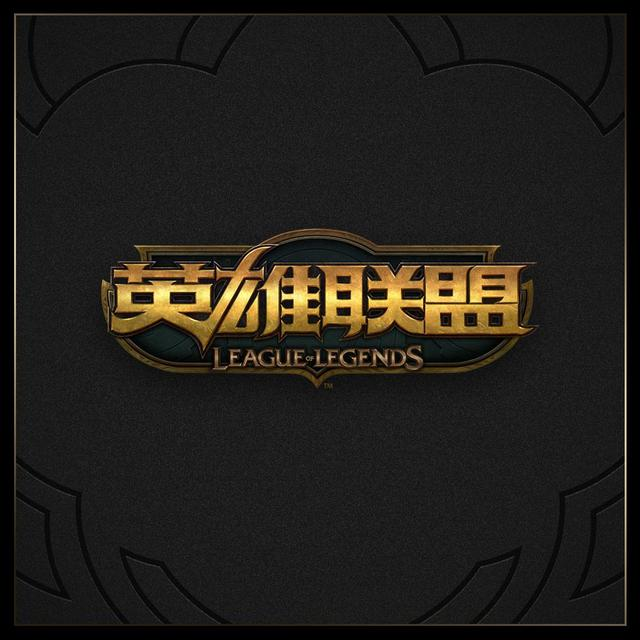
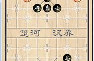

|
游戏
|
新闻网 |
出圣杯的法师都是混子？网友：你怕是没用这3个英雄出圣杯，真香一提到圣杯这件法系装备，很多玩家的第一印象就是，谁出这个谁就是混子。这也引发了许多玩家的议论，这件装备到底是有用还是没用，总不至于全部法师出了都是混子吧，总应该有几个英雄比较适合。最终网友们表示有这3个英雄非常适合出圣杯。 |
|
|  | 老兵从未死去，只是渐渐凋零明凯老了，UZI手伤严重不得不考虑退役。 每年喜欢的队都会被G2淘汰，去年的EDG，今年的SKT，半决赛时，我以为我已经可以听到哪句王朝从未陨落，归来依旧是王。可失望了；7个3:1，牛肉面，烧烤摊，7的意志，洗澡狗，厂长，诺言，梦想型打野，蕉蕉，交际花，莲男，腿哥，胖将军，羊驼，反向Q，马踏飞剑，中路杀神，第一个让AD带C的男人，送一血就稳的男人，我全都要唯独不要峡谷先锋的食肉打野，电子竞技菜是原罪，两个人还杀不死我等。那些横空出世的银河战队：KZ,RW。曾经的Koro,Pawn，爱萝莉，Mouse等。这些年联盟带给我们了不少的回忆。 |
和平精英双十一有哪些活动近期光子上线了几个小彩蛋，有入冬气节登录金币和服饰币，送奇趣派对主题背景，还有一个有趣的活动，连单身玩家光子也照顾到了，登录可以领单身精英手册，收集10册可换“狗头”永久头像框，感觉光子有点自嘲的意思，之前玩家起了个花名皮衣精英，自己想了个单身精英，单身精英手册只需登录游戏，每天完成任意模式(除团竞模式)即可领到。 |
|
王者荣耀：史上最长的ID昵称，玩家至少有20cm，天美：你给我等着王者荣耀不知不觉上线已有四年的时间了，在这一千多天的时间里，天美对游戏版本也是不断的更新，但在更新的过程中bug也是频繁的出现。就好比如说，每次赛季更新上线新英雄的时候，都会出现一些小问题，不是伤害太高，就是防御能力太无解，虽然这些小问题很快就会被修复，但是有些漏洞是天美无法修复的。不知道大家还记不记得，前一段时间版本更新之后，ID昵称的文字出现了严重的bug，很多玩家利用表情符号做ID昵称的，都出现了一串很长的乱码。当时天美发现这个情况之后，也是紧急停服处理这个问题，但治标不治本，到如今这个bug依然，接下来要跟大家说的是，史上最长的ID昵称，玩家至少有20cm，天美：你给我等着。 |
|
《拳皇》有哪些不为人知的彩蛋？当年虐菜无数却错过了这些细节当年街机厅中那些街机游戏，很多都已经在老玩家心中被奉为经典！比如《三国战纪》、《拳皇》、《街头霸王》、《合金弹头》等，其中《拳皇》可谓是格斗类街机游戏中的佼佼者！即便是拿当年的《拳皇97》和如今的一些格斗类大作相比，它的实力也丝毫不逊色！相信大家对《拳皇》系列印象最深刻的应该就是草薙京与八神庵这一对老冤家了吧，虽然每次他们都会斗个你死我活，但是在对待大蛇这件事情上两人却又有着相同的宿命，而官方也为这两个死对头在游戏中设置了不少的彩蛋，接下来小编就来为大家盘点一下在历代《拳皇》中，草薙京与八神庵相遇时究竟会发生什么吧。 |
|
|  | 残局精讲：天天象棋残局闯关第1关——移山填海这里是竹林棋苑。在残局里汲取棋艺的营养，于攻杀中体味象棋的奥妙。从本期开始，我们将陆续拆解天天象棋“残局闯关”里的棋局，意在拆解的过程中，让大家学到一些象棋的攻杀方法，以此来提高大家的棋艺水平。 天天象棋“残局闯关“里所选的棋局都是一些红先胜的攻杀局，其中有连杀局，有隔步杀局，同样也蕴含着一些实用残局。破解这些攻杀局，对提高一个人的攻杀能力，当然是很有帮助的。 |
如果网游在晚上实行关闭服务器，遏制网瘾少年，会有多少人同意相信不少网友看到过此类新闻，“因为游戏里面在屋顶跳下不会有事，孩子便模仿在自己5楼的家中从窗户中跳下，结果当场死亡”“孩子为了玩网络游戏，彻夜不归、逃课、偷钱、将家中的积蓄充值到游戏中，只是为了更强……”。 诸如此类事件可以说是很多，而现在不少家长也是不去寻找问题的根源，只是一昧的寻找背锅，告游戏生产商、运营商，总而言之，只要可以沾上边的，统统先告了再说。 |